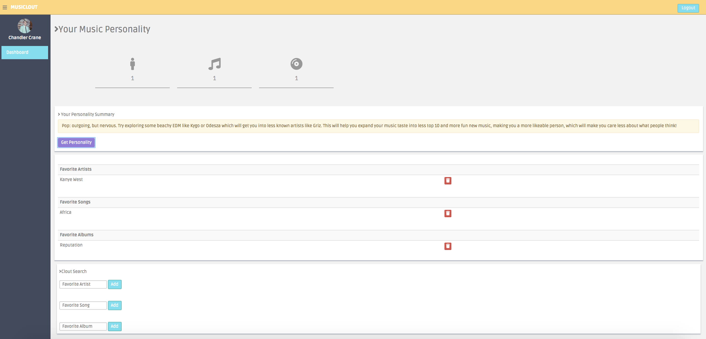
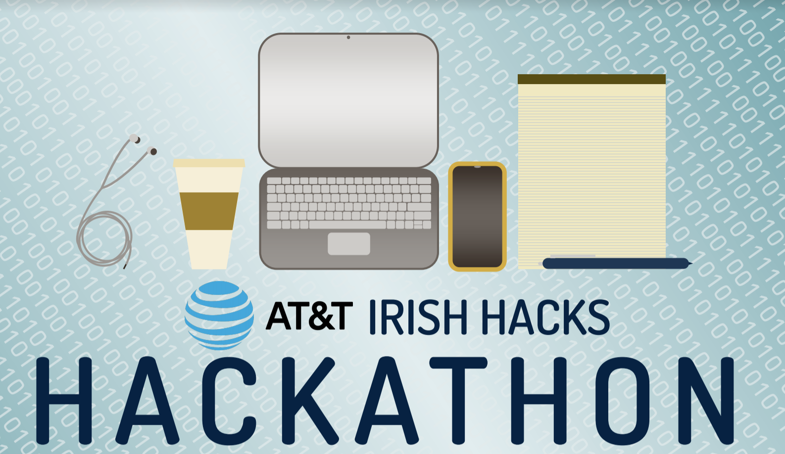

WELCOME
Hi! I'm Kelly Dodson. Thanks for visiting my personal portfolio website.
MY WORK
Please view the links below to view more of my work.
MUSICLOUT MUSIC PERSONALITY PROJECT
Blog Post, Dec 15, 2018
Creating a music personality server
This semester, my awesome team of 4 and I created a music personality server and two clients using CherryPy, PyQt, and JavaScript. The server stores one's favorite Spotify artists, albums, and tracks and calculates one's "music personality", giving a user helpful advice about what music they should listen to next.
IRISH HACKS HACKATHON 2018
Blog Post, Nov 30, 2018
Hosting a software project competition
Thanks Scholastic magazine for highlighting the hackathon that my club, Notre Dame ACM, hosted this month. I am proud of my fellow ND students and their innovations.
GRACE HOPPER 2018 REFLECTION
Blog Post, Sept 29, 2018

A celebration of women in tech
I am honored and grateful for my experience at the AnitaB.org Grace Hopper Celebration in September! It was amazing to meet so many inspiring women in tech and to attend workshops about quantum computing, VR, entrepreneurship, and more. Thanks to the University of Notre Dame for sending myself and 25 women to this unforgettable conference.